Từ ngàn xưa, khi tổ tiên chúng ta còn sống trong hang động, đã biết dùng lửa. Có lẽ họ đã biết dùng lửa rất lâu (do tình cờ) trước khi biết làm ra lửa.
Ngày nay, chúng ta quá quen với các tiện nghi văn minh đến độ... đôi khi chúng ta quên đi sự quan trọng của lửa, có thể là do chúng ta làm ra lửa một cách dễ dàng bằng diêm, bật lửa, điện...
Nhưng nếu các bạn đi vào rừng hay bị lạc vào nơi hoang dã, các bạn sẽ thấy: Lửa là một nhu cầu không thể thiếu được trong đời sống của con người. Là một nguồn năng lượng rất quan trọng trong việc mưu sinh để tồn tại nơi hoang dã:
- Lửa cung cấp ánh sáng và hơi ấm, giúp chúng ta tự tin và thư giãn tinh thần.
- Lửa làm cho chúng ta có cảm giác được che chở trước các thú dữ lẫn trong bóng tối.
- Lửa giúp chúng ta nấu nướng thức ăn, sấy khô các thực phẩm cần tồn trữ.
- Lửa hong khô các y phục và đồ dùng ẩm ướt, giúp chúng ta không bị nhiễm lạnh.
- Lửa được dùng đun sôi để khử trùng và làm tinh khiết nước.
- Lửa và khói có thể dùng để làm tín hiệu.
- Lửa dùng để đốt một đầu cây, tạo thành mũi nhọn để làm vũ khí.
- Lửa có thể thay cưa rìu trong việc cắt cây để dựng nhà, làm nơi trú ẩn.
- Lửa và khói có thể xua đuổi một số động vật, côn trùng, muỗi mòng... khỏi nơi chúng ta đang trú ẩn.
- Lửa và khói dùng hun ong bay ra khỏi tổ để chúng ta lấy mật và nhộng.
- Lửa còn dùng để xua đuổi muông thú ra khỏi nơi ẩn núp để rồi bị rơi vào bẪy hay bị đón bắt.
- Một khúc cây đang cháy có thể dùng làm vũ khí để chống trả hay xua đuổi mãnh thú.
- Lửa dùng để soi chim cá và các động vật khác, làm cho chúng bị chói mắt để chúng ta dễ dàng tiếp cận.
Nếu khi nào cần, mà các bạn có thể làm ra được lửa, thì khả năng sinh tồn nơi hoang dã của các bạn được bảo đảm hơn.
Lửa là yếu tố quan trọng nhất ở nơi trú ẩn. Nếu không có lửa, các bạn sẽ chìm trong bóng tối lạnh lẽo. Như vậy, tình hình sẽ càng xấu đi rất nhiều. Cho nên các bạn phải biết nhiều phương pháp lấy lửa khác nhau, để có thể áp dụng với những vật liệu mà chúng ta có thể tìm thấy tại chỗ.
BÙI NHÙI HAY CHẤT DẪN LỬA
Trước khi muốn làm ra lửa, các bạn phải chuẩn bị một số bùi nhùi hay vật dẫn lửa. Đây là những vật tơi, xốp, khô, dễ bắt lửa, dễ cháy.
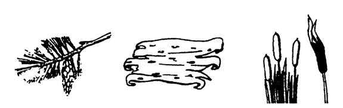
Nếu gặp thời tiết tốt và khô ráo thì chúng ta dễ dàng tìm thấy những vật liệu để dẫn lửa như: cành cây khô, lá khô, cỏ khô, hoa khô, tre khô, trái gòn khô, dương xỉ, rêu hay địa y khơ, vỏ cây khô, trái thông khô, lông chim, tổ chim, phân khô của súc vật...
Nếu gặp thời tiết xấu, ẩm ướt, các bạn cố tìm cho được những loại cây có tinh dầu như: thông, tùng, song tử diệp... Dùng dao hay rìu bửa bỏ lớp vỏ ấm ướt bên ngoài, rồi vạt thật nhỏ như dăm bào... Các bạn cũng có thể tìm thấy các vật dẫn lửa dưới các tảng đá, trong những bọng cây, hay dưới các lớp lá khô....
Nếu không tìm được các chất dẫn lửa thiên nhiên, các bạn có thể dùng giấp vụn, vải xé nhỏ, băng gạc và bông gòn trong túi cứu thương, bông gòn trong áo bông, mỡ động vật, kem nhóm lửa, xăng dầu (nếu có)....
CÁC CÁCH TẠO RA LỬA
Các cách thông thường
Dĩ nhiên tốt nhất là chúng ta có một hộp diêm không thấm nước, một quẹt gas gọn gàng tiện lợi, hoặc những vật dụng đánh lửa có bán trên thị trường như: Đá đánh lửa (Flint Fire Starter), Đá Ma-nhê (Mangesium Fire Starter).
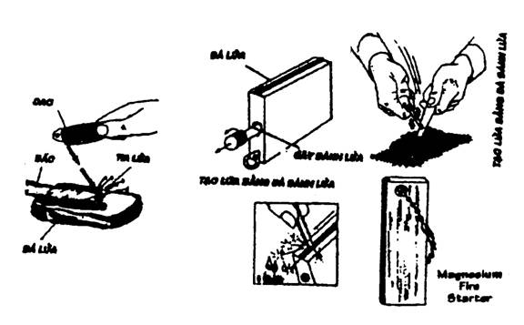
Dùng thấu kính
Đây cũng là một phương pháp khá dễ dàng. Các bạn dùng thấu kính hội tụ từ các vật dùng như: kính lúp, ống dòm, máy ảnh, kính cận hay kính lão cao độ, đít chai tròn...
Các bạn đưa thấu kính lên, đặt thẳng góc với mặt trời, đoạn xê dịch sao cho điểm sáng hội tụ gom lại thành một chấm nhỏ nhất, chiếu thẳng vào mớ bùi nhùi dễ cháy. Vài giây sau khói sẽ bốc lên, chờ khi thấy có điểm lửa, các bạn cầm bùi nhùi lên thổi nhè nhẹ, lửa sẽ bùng lên. (Nếu các bạn có vài hạt thuốc súng hay phân dơi thì chỉ vài giây sau lửa sẽ bùng lên ngay)
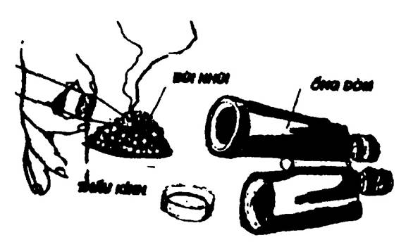
Lưu ý: Thổi lửa từ bùi nhùi đang cháy ngún để cho ngọn lửa cháy bùng lên là cả một kinh nghiệm. Không thể thổi quá mạnh hay quá yếu mà thổi nhè nhẹ, khi thấy khói càng lên nhiều thì càng tăng cường độ, và cho thêm bùi nhùi vào, cho đến khi lửa cháy bùng lên.
Dùng pin hay bình điện (Accu)
Nối hay đầu dây điện vào hai cực âm dương rồi đánh vào nhau. Nếu cường độ điện đủ mạnh, và bùi nhùi dễ bắt lửa (có tẩm xăng dầu càng tốt), thì sau vài lần đánh, lửa sẽ bùng cháy (các bạn cần đánh nhanh liên tiếp).
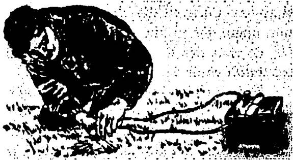
Lấy lửa bằng khoan cần cung
Đây là một trong những phương pháp lấy lửa cổ đại nhất, rất hiệu quả nhưng mất khá nhiều thời gian, các bạn cần phải thật kiên trì cũng như phải nắm vững kỹ thuật thao tác.
- Trước tiên, các bạn dùng một cành cây hơi dẻo để làm một cần cung dài khoảng 60 – 80 cm. Dây cung được làm bằng các loại dây bền chắc như dây da, dây dù, dây gai se lại... theo hình dưới đây.
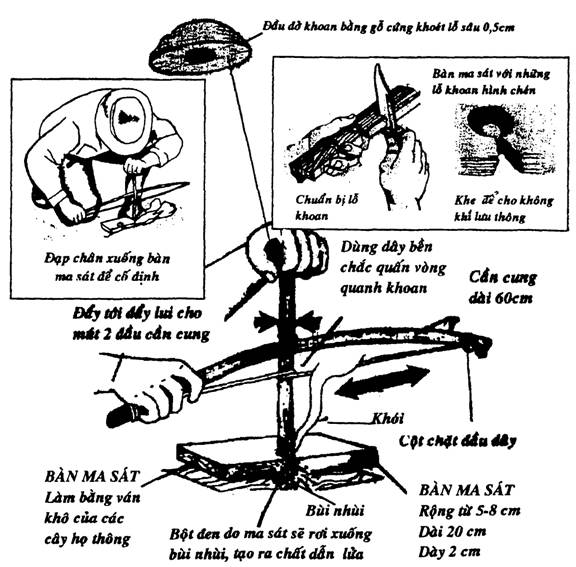
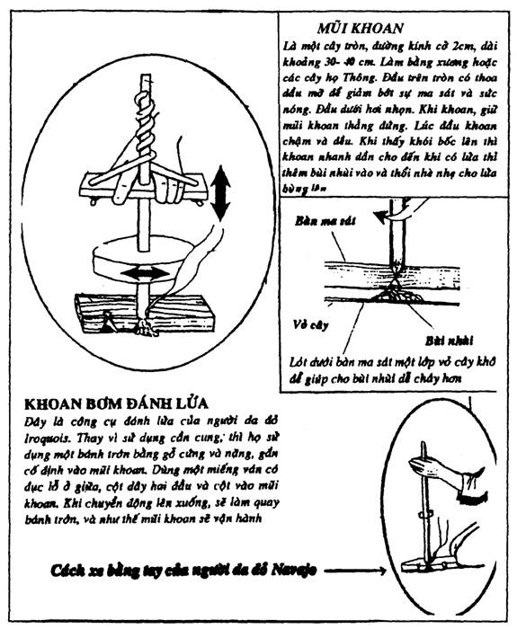
CƯA TẠO LỬA
Các bạn dùng tre hay nứa chẻ làm đôi, một nửa cố định làm bàn ma sát, nửa kia dùng làm cưa. Lật úp bàn ma sát xuống vắt ngang một khe nhỏ để cố định vết cưa. Độn bùi nhùi vào dưới vết cắt. Đặt thanh tre vào khe và kiên nhẪn cưa, lúc đầu cưa chầm chậm, khi thấy bắt đầu bốc khói, thì tăng dần nhịp độ cho đến khi thấy có lửa thì cho thêm bùi nhùi vào và thổi cho lửa bùng lên.
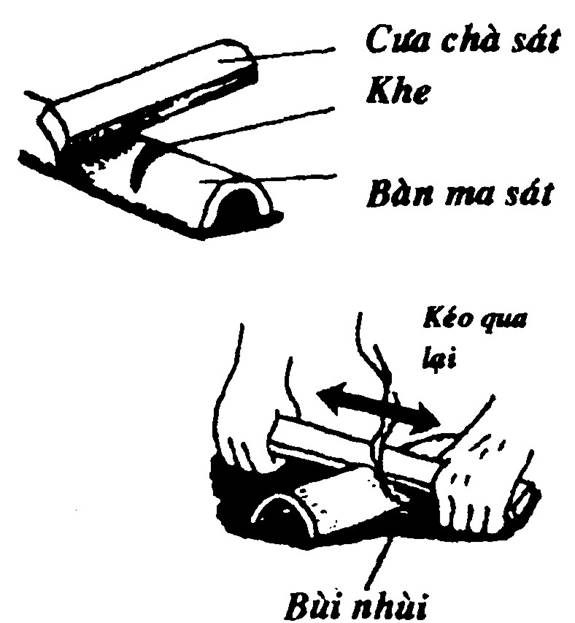
KÉO DÂY TẠO LỬA
Lấy một thân cây tròn chẻ làm đôi, và chêm cho hở ra. Nhét một nắm bùi nhùi vào trong kẽ. Lấy một sợi dây dẻo, bền, chắc (tốt nhất là dây mây) vòng qua nắm bùi nhùi đó. Hay tay cầm hai đầu dây kéo lên kéo xuống đều đều cho đến khi thấy bùi nhùi bốc khói thì kéo nhanh dần. Lúc bùi nhùi bén lửa thì cầm thổi cho lửa bùng lên.
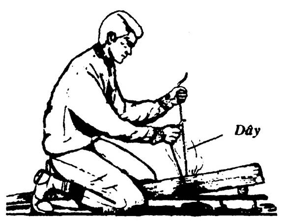
GIỮ GÌN VÀ BẢO QUẢN LỬA
Nếu có diêm, bật lửa hay các dụng cụ đánh lửa khác, thì chúng ta không cần phải giữ lửa. Nhưng nếu không có thì chúng ta phải biết một vài cách bảo quản cho lửa không tắt, vì như các bạn đã biết một lần làm ra lửa cũng chẳng dễ dàng gì.
Trường hợp các bạn ở một chỗ thì rất dễ. Chỉ cần đưa những gốc cây khô, lớn, vào đống lửa, giữ cho cháy suốt ngày đêm. Nếu các bạn muốn đi vắng một vài ngày mà khi quay về, lửa vẫn còn cháy, các bạn chỉ cần sắp những gốc cây dài thành một hàng, đặt gối lên nhau, rồi đốt phía trên gió.
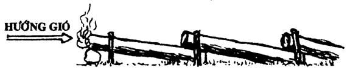
- Lấy một đoạn dây thừng khô (loại thừng được bện bằng xơ dừa), đốt một đầu dây cho cháy lên rồi thổi tắt, chỉ để lửa cháy ngún. Tuỳ theo độ dài của sợi dây, các bạn có thể giữ được lửa từ vài giờ cho tối vài ngày. Khi cần, chúng ta đưa đầu lửa vào bùi nhùi và thổi cho lửa bùng lên.
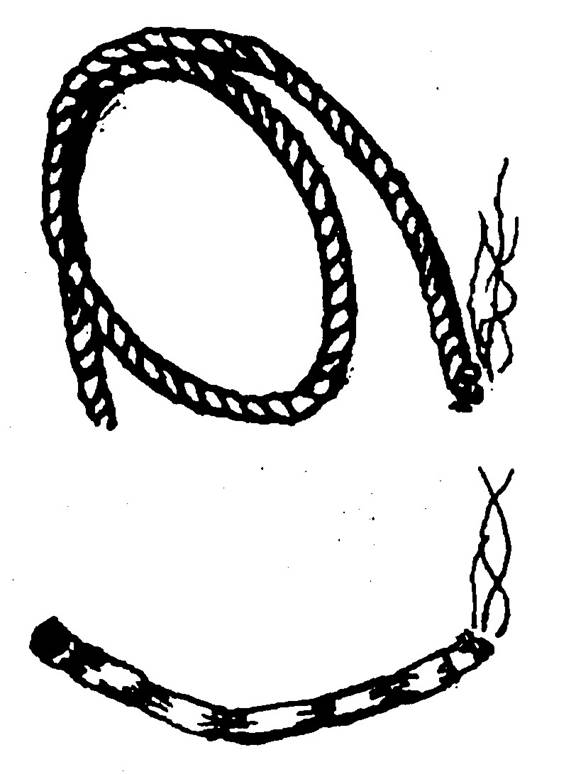
- Dùng một miếng vải cuộn tròn lại, và se cho thật chặt. Lấy dây cột lại từng khúc (như cột bánh tét), và sử dụng như một đoạn dây thừng.
- Lấy vỏ cây khô, xơ của nách là dừa, cọ, đùng đình... khô, bó lại chung quanh một cây củi khô, loại gỗ tốt. Bên ngoài bao bằng lá tươi của các loại cây như: buông dừa, kè... Dùng các loại dây rừng tươi bó lại cho thật chặt. Đốt một đầu cho cháy ngún, các bạn có thể giữ được lửa khá lâu.
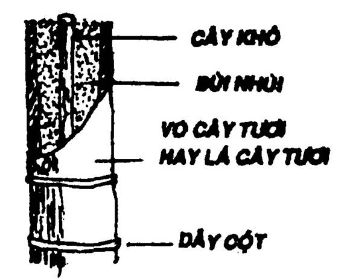
- Dùng rơm hay cỏ khô... bện theo hình con rít hay quấn lại cho thật chặt (có nơi gọi là con cúi), đốt một đầu cho cháy ngún (nếu lửa cháy bùng lên thì phải thổi tắt ngay). Tuỳ theo các bạn bện dài hay ngắn mà chúng có thể giữ được lửa lâu hay mau.
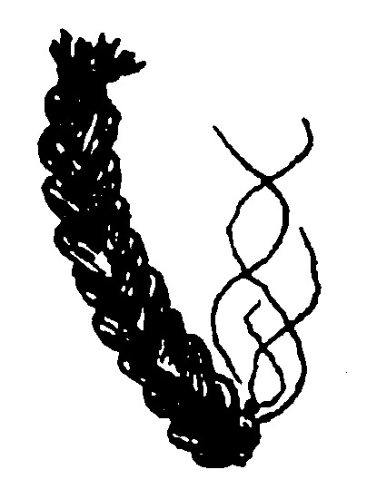
- Lấy lon đồ hộp, gáo dừa, vỏ cây tươi, bọng cây... đổ tro nóng vào. Lựa loại than chắc, nặng, đang cháy hồng, bỏ vào và phủ lên trên một lớp tro mỏng hay địa y khô. Khi di chuyển thì dùng dây treo để mang theo. Cách nầy có thể giữ lửa được khoảng một buổi (từ sáng đến trưa, hay từ trưa đến tối).
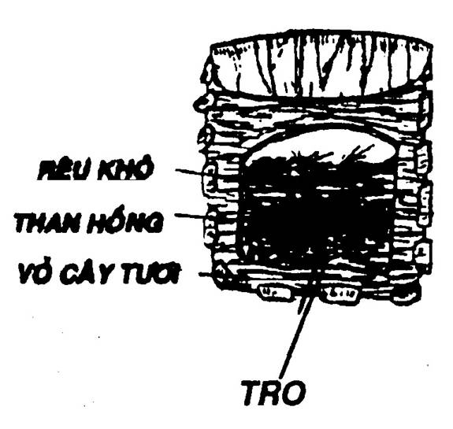
KỸ THUẬT ĐỐT THAN
Than là một loại nguyên liệu khá nhẹ, cháy nóng, lâu tàn, không khói, dễ tồn trữ và bảo quản... Thích hợp cho những nơi trú ẩn kín đáo hay trong hang động. Nhưng để có than ở nơi hoang dã, các bạn phải nắm bắt được những kỹ thuật cơ bản về đốt than.
1.Thiết kế vỏ lò:
Tìm một địa thế tương đối bằng phẳng, đào sâu xuống độ 1 mét, rộng từ 1 – 2 mét (vuông hay tròn cũng được). Khoét rãnh thông hơi chung quanh nền lò và đặt ống thông khói.
2. Nạp củi:
Chọn những loại cây cho than chắc như: Cầy, Ngành Ngạnh, Thị, Da đá... Cắt ra từng khúc bằng chiều cao của lò (1 mét), sắp đứng sát vào nhau trong lò. Bên trên, sắp các cành cây nhỏ rồi lấy đá đậy lên cho thật kín. Đắp lên trên một lớp đất sét hay đất thịt đầy khoảng 20cm.
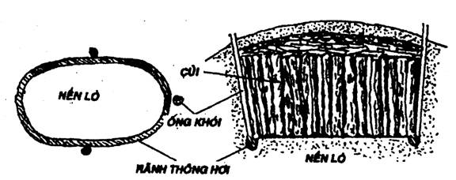
3. Đốt lò:
Các bạn đào thêm một cái hố khác, cách lò khoảng 40 cm, rộng khoảng 60 – 70 cm (đủ cho một người ngồi xoay trở), sâu 1 mét (bằng chiều sâu của lò). Từ cái hố nầy, các bạn đục một lỗ thông qua lò, gọi là “lỗ chụm”, lỗ nầy rộng khoảng 30cm.
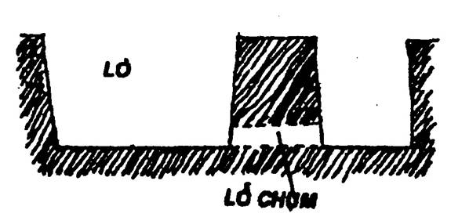
Cho củi khô vào lỗ chụm, rồi đốt cho tới khi khói từ các lỗ thông nhạt bớt, và hơi nóng toả lên, gọi là “phát hoả” (khoảng 48 giờ). Sau đó, các bạn bít lỗ chụm lại và theo dõi hơi khói từ ống khói (nếu khói không lên thì phải đốt lại) cho tới khi thấy khói đóng nhựa đen và khô.
Để dễ theo dõi, các bạn gác ngang trên ống khói một miếng cây rộng khoảng 2 cm. Khi thấy miếng cây đóng khói theo yêu cầu là được.
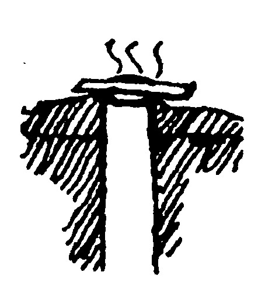
Thông thường thì đốt khoảng từ 8 đến 10 ngày là than chín. Khi đó, các bạn bịt kín tất cả các lỗ thông khói lại. Để khoảng 7 ngày than nguội thì khui ra.
ĐỐT THAN ĐƠN GIẢN
Các bạn còn có thể làm ra than bằng phương pháp đơn giản như sau:
- Đào một hố sâu từ 80 – 1 mét, rộng khoảng 1 – 1,50 mét.
- Bỏ củi khô xuống đốt cho cháy bùng lên
- Xếp củi tươi lên trên đống lửa, đợi cho lửa bắt cháy xém đống củi tươi đó.
- Lấp dần đất lại cho đến khi thật kín
- Để yên khoảng 5 ngày thì khui ra.
Than đốt cách nầy không chín đều cho nên khi đun nấu có một số còn cháy thành lửa ngọn, hoặc bị khói. Vì vậy, bằng kinh nghiệm của mình, các bạn nên chọn những phần than đúng tiêu chuẩn để riêng ra, dành đốt những khi cần.
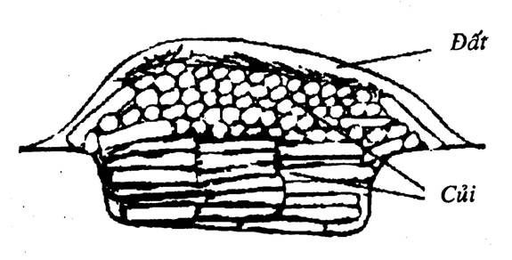
THẮP SÁNG & SƯỞI ẤM
Khi ở nơi hoang dã, các bạn không có những vật dụng cần thiết để thắp sáng như: đèn cầy, đèn bão, đèn pin... thì các bạn có thể đốt lên một đống lửa. Tuy nhiên, có những nơi mà các bạn không thể bê nguyên cả một đống củi vào chỗ trú ẩn để vừa thắp sáng vừa sưởi ấm được như: hang động, vòm băng igloo, nơi trú ẩn chật chội... Vì khói có thể làm bạn ngộp thở, gây cháy nổ (nếu gặp phân dơi)... Vậy các bạn hãy sử dụng một trong những phương thức sau đây để có thể vừa thắp sáng, vừa sưởi ấm và cũng có thể vừa làm nóng thức ăn.
Xăng đặc: Là những hợp chất được chế tạo theo công nghiệp, thành từng miếng nhỏ, trắng hay ngà. Dành riêng cho quân đội, những nhà thám hiểm, những người đi dã ngoại... Khi đốt thì toả sức nóng nhưng không tạo khói. Tuy nhiên, “xăng đặc” không có ánh sáng nên không thể thay thế cho đèn được. Ngoài ra, khi đốt nơi kín đáo chật hẹp, có thể toả ra hơi độc. Cần cẩn thận.
Các bạn chỉ có xăng đặc khi đã được chuẩn bị trước.
Bếp mini
Nếu các bạn có sáp (lấy từ các tổ ong), dầu thực vật, mỡ động vật… và một ít hộp thiếc, thì các bạn có thể chế tạo thành những bếp mini khá đơn giản như sau:
Cách thứ nhất:
- Dùng một lon thiếc có nắp đậy. Đục 4 lỗ trên nắp lon. Xâu 4 tim đèn vào những lỗ đó.
- Lấy dầu thực vật hay mỡ động vật hoặc nấu sáp cho chảy ra đổ vào lon. Đậy nắp lại.
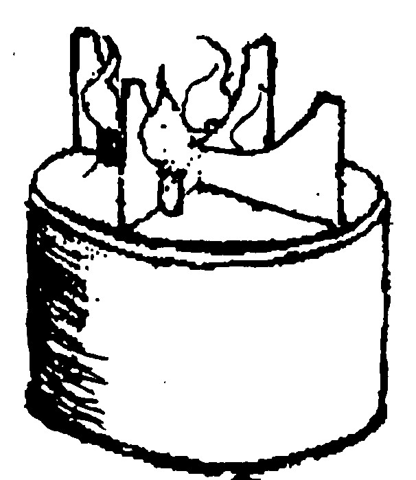
- Cắt 2 miếng thiếc như hình bên để làm kiềng đỡ. Khi sử dụng thì ráp chồng lên nhau, khi không cần thì tháo ra xếp gọn.
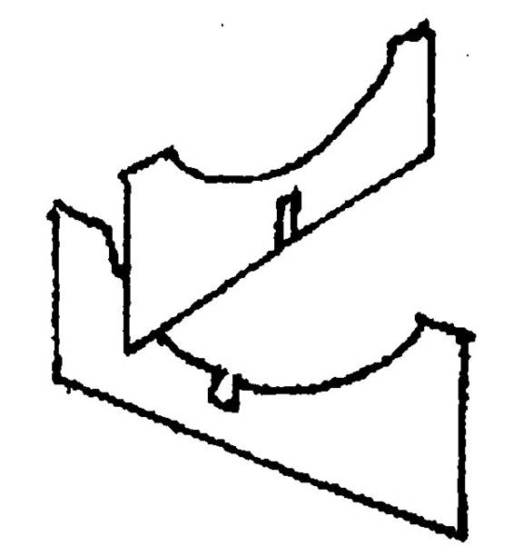
Cách thứ hai:
Lấy 4 – 5 tờ nhật báo hay vải cuộn tròn rồi cột chặt lại. Cắt từng đoạn ngắn (vừa bỏ vào lon). Nấu đèn cầy hay dầu, mỡ đổ vào như trên.
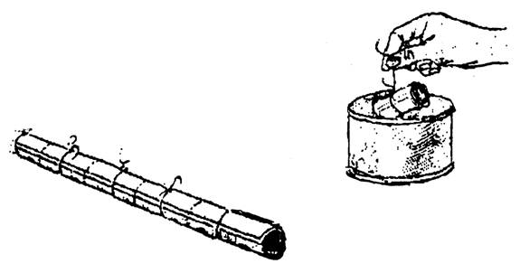
Lưu ý: Khi nấu loại bếp nầy nên bỏ vào một lon nước lớn hơn để làm nguội.
Bếp Koolik của người Eskimos.
Vật dụng: Hộp đựng chất lỏng, một mãnh vải, một miếng thiếc, mỡ động vật hay dầu thực vật.
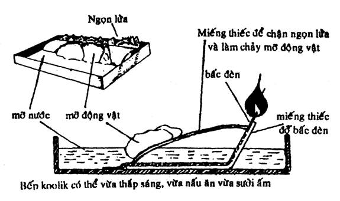
Đèn thợ rừng
Dùng một mảnh vỏ sò, nghêu, vỏ lon đồ hộp, miếng gáo dừa, dĩa sành… Đựng một ít dầu ăn hay mỡ động vật. Lấy vải hay bông gòn làm tim đèn. Kẹp tim đèn ở giữa hai cục đá không cho tuột xuống. Đốt lên, các bạn sẽ có một ngọn đèn tuy hơi mờ nhưng cũng cung cấp được phần nào ánh sáng.
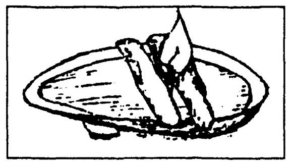
Đèn mù u
Các bạn có thể lấy nhân của trái mù u già, (là một cây mọc hoang và cũng được trồng khắp nơi trong nước ta). Ép lấy dầu để thắp đèn. Hoặc thái mỏng rồi xâu vào một cái que, khi đốt sẽ cháy như đuốc và khá lâu.
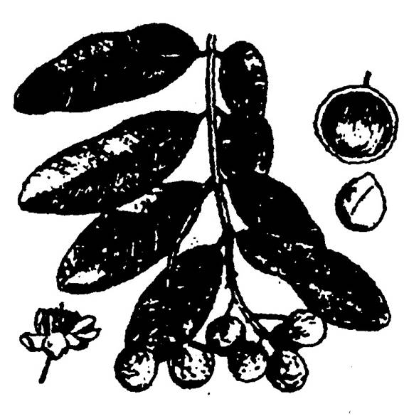
Đuốc bu-lô
Lột một miếng vỏ mỏng (lớp trong) của cây bu-lô (Birch), cuốn nhỏ lại theo chiều dọc của thớ vỏ cây, giắt vào một cái kẹp (như hình minh hoạ), rồi đốt lên một đầu, cứ mỗi một mét, đuốc sẽ cháy từ 15 đến 20 phút.
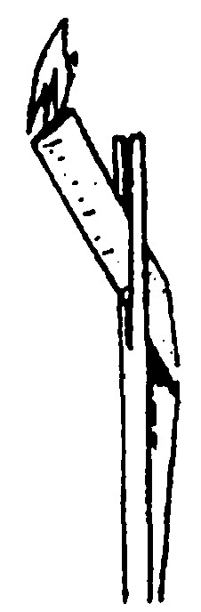
Đốt đèn cây khi gió lớn
Nếu các bạn có đèn cầy, muốn đốt lên mà không sợ bị gió thổi tắt, xin hãy làm theo những mẫu minh hoạ dưới đây:
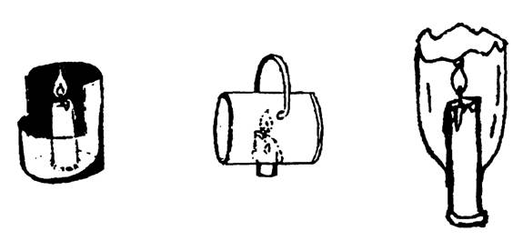